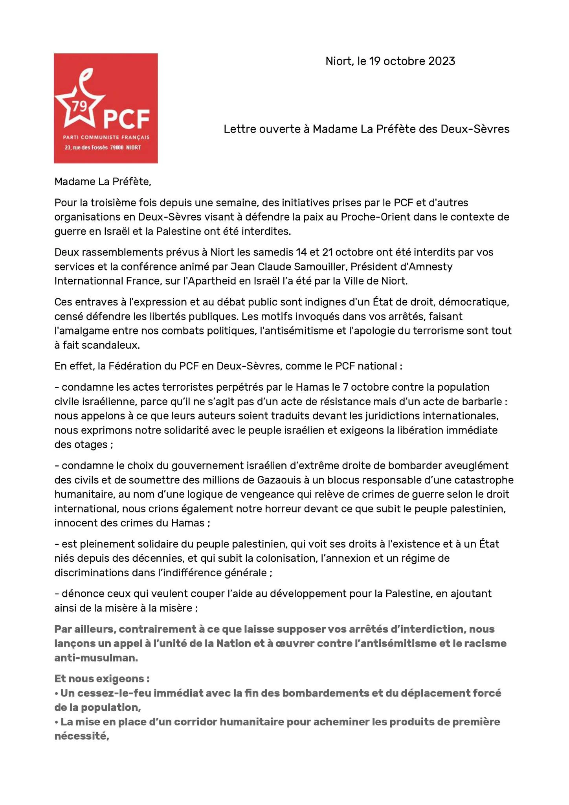
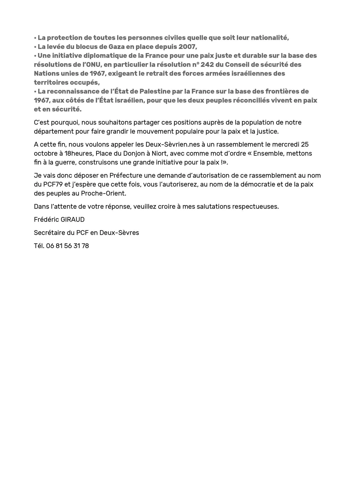

Publication de la fédération
Pour une paix juste et durable au Proche-Orient. La lettre du PCF 79
Date indiquée par Facebook · 20 octobre 2023
Repères éditoriaux
La fédération a publié la lettre en deux pages. Les documents conservent son intervention dans le débat d’octobre 2023.
Texte conservé avec la publication
POUR UNE PAIX JUSTE ET DURABLE AU PROCHE ORIENT !


Sources
Archive rouge · export Facebook · AR-0002-FB-01559
À lire aussi · À Niort, le rassemblement du 25 octobre pour la paix en vidéo · Le lien d’origine